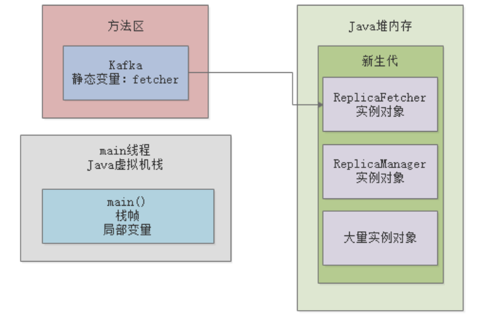
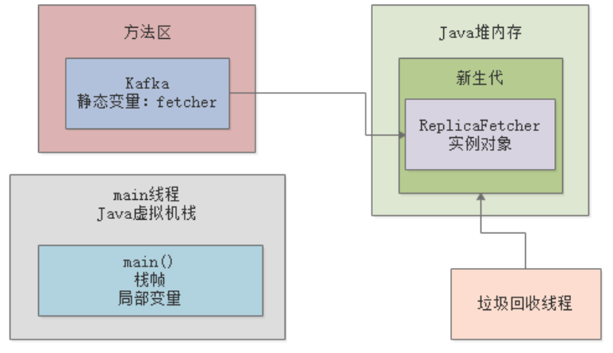
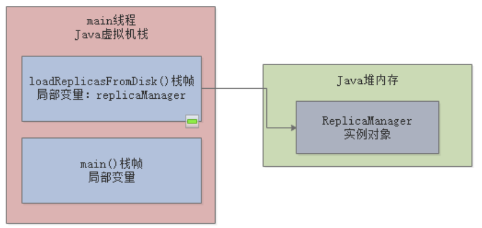
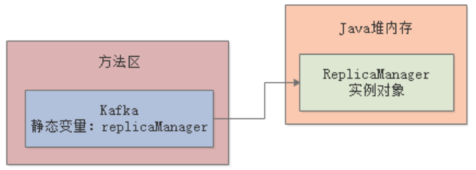
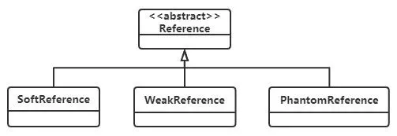

我们在 JVM垃圾回收机制一章中，简单介绍了JVM的垃圾回收机制，先来回顾下，系统运行时创建的对象优先在Java堆内存区域分配：

然后新生代里的对象越来越多，当快满了的时候就会触发“Minor GC”，把新生代中的一些对象回收掉：

那么这里就涉及一个问题：JVM如何知道要去回收哪些对象？这其实就是JVM的对象存活判定机制，主要涉及两种算：可行性分析算法和引用计数算法。
引用计数算法，是给对象添加一个引用计数器，每当有一个地方引用它时，计数器就加1，当引用失效时，计数器值就减1，任何时刻计数器为0的对象就是可以被回收的。
由于Java语言没有选用引用计数法来管理JVM内存，所以本文不赘述，而且引用计数法不能很好的解决循环引用的问题（Python采用的是引用计数法）。
可达性分析算法（GC Root Tracing ），其基本思路就是通过一系列的名为"GC Roots"的对象作为起始点，从这些起始点开始搜索，搜索所走过的路径称为引用链（Reference Chain），当一个对象到GC Roots没有任何引用链相连时（即从GC Roots到这个对象不可达），则证明此对象是不可用的，就可以被回收。
GC Roots包括：
可达性分析算法最难理解的就是该选取哪些对象作为GC Roots，我们通过两个示例来看下。
下面是最常见的一种情况：
public class Kafka {
public static void main(String[] args) {
loadReplicasFromDisk();
}
public static void loadReplicasFromDisk(){
ReplicaManager replicaManager = new ReplicaManager();
}
}
当执行到loadReplicasFromDisk()时，对应的JVM内存数据结构如下图：

假如此时新生代的内存已经快满了，发生了“Minor GC”，那么JVM会分析ReplicaManager对象的可达性，发现它被“replicaManager”这个局部变量引用着，在JVM规范中，局部变量是可以作为GC Roots的，所以就不会被回收。
另一种比较常见的情况，是下面这种样子：
public class Kafka {
public static ReplicaManager replicaManager = new ReplicaManager();
}
对应的JVM内存数据结构如下图：

假如此时新生代的内存已经快满了，发生了“Minor GC”，那么JVM会分析ReplicaManager对象的可达性，发现它被“replicaManager”这个方法区中的静态变量引用着，在JVM规范中，静态变量是可以作为GC Roots的，所以就不会被回收。
可达性分析与Java的引用类型有关联，为了更好的管理对象的内存，更好的进行垃圾回收，JVM团队扩展了引用类型，从最早的强引用类型增加到强引用、软引用、弱引用、虚引用四个引用类型：

默认的对象都是强引用类型，如果JVM在对象存活判定时，通过GC Roots可达性分析结果为可达，表示引用类型仍然被引用着，这类对象始终不会被垃圾回收器回收。比如下面这段代码：
public class Kafka {
public static ReplicaManager replicaManager = new ReplicaManager();
}
在JVM内存充足的情况下，软引用是不会被GC回收的，只有在JVM内存不足的情况下，才会被GC回收。比如下面这段代码：
public class Kafka {
public static SoftReference<ReplicaManager> replicaManager = new SoftReference<ReplicaManager>(new ReplicaManager());
}
适用场景：网页缓存、图片缓存
不论当前JVM内存是否充足，都只能存活到下一次垃圾收集之前，说的直白点，只要发生GC弱引用对象就会被回收，比如下面这段代码：
public class Kafka {
public static WeakReference<ReplicaManager> replicaManager = new WeakReference<ReplicaManager>(new ReplicaManager());
}
ThreadlLocal中定义的ThreadLocalMap就使用到的弱引用。ThreadLocalMap的Entry，其Key就是一个弱引用对象，读者可以参考我的《Java多线程系列》。
虚引用，不会影响对象的生命周期，所持有的引用就跟没持有一样，随时都能被GC回收。在使用虚引用时，必须和引用队列关联使用。其使用场景是用来跟踪对象被垃圾回收器回收的活动。
在对象的垃圾回收过程中，如果GC发现一个对象还存在虚引用，则会把这个虚引用加入到与之关联的引用队列中。
程序可以通过判断引用队列中是否已经加入了虚引用，来了解被引用的对象是否将要被垃圾回收。如果程序发现某个虚引用已经被加入到引用队列，那么就可以在所引用的对象内存被回收之前采取必要的行动防止被回收。
大家理解完了GC Roots和引用类型的概念，基本就都知道了哪些对象可以被回收，哪些对象不可以被回收：
有GC Roots引用的对象不能回收，没有GC Roots引用的对象，如果是软引用或弱引用，可能会被回收。
真正的回收环节，待被回收的对象其实还有一次机会拯救自己，那就是对象的finalize()方法。我们通过一段代码示例来看下：
public class ReplicaManager {
public static ReplicaManager instance;
@Override
protected void finalize() throws Throwable {
ReplicaManager.instance = this;
}
}
假如有一个ReplicaManager对象马上就要被回收了（此时已经没有GC Roots到达它的链路），此时GC会首先调用下该对象的finalize()方法，看看它是否找了一个新的GC Roots来引用自己，比如上述代码中，GC发现有个静态变量instance引用了该实例，那GC就不会去回收它。
finalize方法没事不要去重写，这都是GC内部的机制，平时也几乎不用。